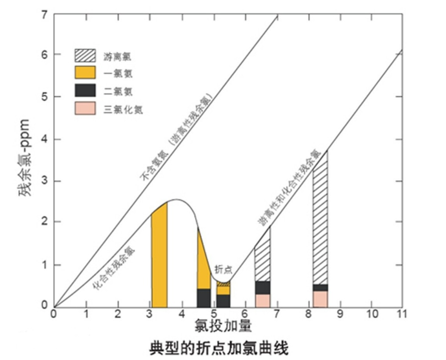

折点加氯（chlorination breakpoint）是对饮用水进行加氯消毒的一种有效方法。当水中有机物主要为氨和氮化物，其实际需氯量满足后，加氯量、余氯量增加，但是后者增长缓慢，一段时间后，加氯量增加，余氯量反而下降，此后加氯量增加，余氯量又上升，此折点后继续加氯消毒效果更好，称为折点加氯。
在这个过程中氨和其他氮化物被氧化成氮气排放，因此折点反应反应也经常用于污水处理过程中的氨氮去除。
一、 具体的反应过如下：
|
反应 |
备注 |
|
NaClO + H2O=NaOH + HClO |
可逆反应 Cl2、HClO、ClO-称为游离性余氯 |
|
NH₄⁺+HOCl→NH₂Cl+H₂O+H⁺ |
NH₂Cl、NHCl₂、NCl₃及其他氯胺化合物称为化合性余氯 |
|
NH₂Cl+HOCl→NHCl₂+H₂O |
|
|
NHCl₂+HOCl→NCl₃+H₂O |
|
|
游离性余氯和化合性余氯统称余氯。都有氧化性，可以杀菌消毒。 反应产酸，因此需要补充碱，控制在pH在弱碱性，以确保反应向右进行。 |
|
游离性余氯和化合性余氯统称余氯。都有氧化性，可以杀菌消毒。
反应产酸，因此需要补充碱，控制在pH在弱碱性，以确保反应向右进行。
当继续投加次氯酸钠，自由氯将会导致折点反应，氧化氯胺，进一步去除氨氮，会进一步发生如下反应，将氮元素氧化成氮气排放到空气中，完成不可逆的脱氮反应。总反应式是：
2NH₄⁺+3HOCl→N2↑+3H₂O+5H⁺+3Cl- 
下图直观显示了折点反应过程。
二、 折点加氯去除氨氮的成本估算
从这些方程式可以发现，氯化法除氮的关键是投加适量的NaClO。据总反应方程式计算，当次氯酸钠投加量与氨氮的质量比（Cl/N)为3.8时，摩尔比2：3时，污水中的氨氮能够被氧化为N2，而且化合态余氯值小，因此将该点称为折点。当C1/N比大于3.8时，所投加的氯产生自由余氯；当C1/N比小于 3.8时，除氨效果不佳。
统称次氯酸钠的有效含量是10%，按废水氨氮含量在100mg/L时，1000L废水需8.8公斤10%次氯酸钠，次氯酸钠市场价格大约在1000元/吨，即处理1吨氨氮含量在100mg/L的废水原料成本为8.8元/吨。若氨氮含量在200 mg/L，则原料成本为17.6元/吨，折点加氯法成本较高，一般处理低浓度的氨氮废水或者应急手段。
折点加氯法比较大的优点是处理效果稳定，不受水温影响，投资较少。但要完全去除氨氮加氯量大，费用高。因为会产生余氯，故须附设除余氯设施去除余氯才能合规排放。目前此方法只能作为氨氮废水的后续处理，以及给水处理或饮用水处理，适用于处理较低浓度氨氮废水。处理氨氮污水所需的实际氯气量取决于温度、pH值及氨氮浓度。
为了克服单独采用折点加氯法处理氨氮废水需要大量加氯的缺点，常将此法与生物硝化连用，先通过硝化细菌的硝化反应大幅度降低氨氮含量，再通过次氯酸钠去除微量残留氨氮。
关于硝化细菌和污水的氨氮去除可以咨询半点科技的技术人员。
转载请注明半点科技网站地址：www.dropletech.net